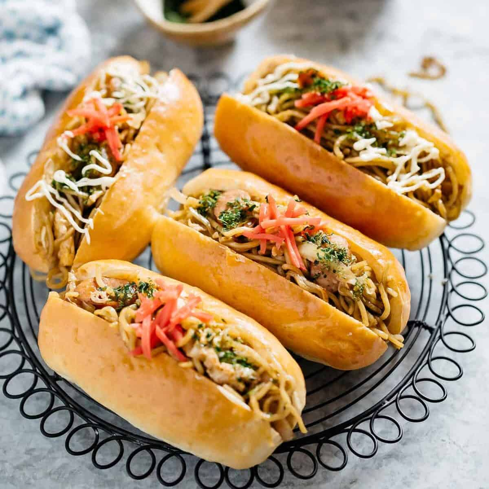

As the name states, yakisoba pan is an unusual Japanese combination of stir-fried yakisoba noodles and plain bread rolls. The noodles are first blended with various vegetables and doused in a thick sauce, and the combination is then stuffed inside the roll. The concoction is finished with mayonnaise, pickled ginger, and strips of dry seaweed. Yakisoba pan is available in many grocery stores and supermarkets throughout Japan and is usually enjoyed as a nutritious snack or a quick breakfast.
Meal prep time : 30 minutes
Servings : 8